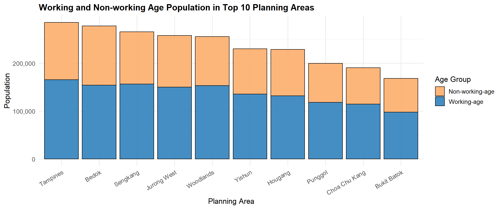

pacman::p_load(tidyverse, ggrepel, patchwork,
ggthemes, hrbrthemes,) Take-Home Exercise 1: Data Visualisation on Singapore’s Demographics (2024)
1.1 Overview
This take-home exercise involves designing insightful data visualisations based on demographic data for Singapore in 2024. The goal is to explore and communicate the demographic structures and distribution through effective graphical representations.
1.1.1 The data
All visualisations will be based on the dataset titled
“Singapore Residents by Planning Area / Subzone, Single Year of Age and Sex, June 2024”,
provided by the Department of Statistics, Singapore (DOS).
1.2 Getting started
1.2.1 Installing and loading the required libraries
In this exercise, beside tidyverse, four R packages will be used. They are:
tidyverse: a collection of core packages designed for data science, used extensively for data preparation and wrangling.
ggrepel: an R package provides geoms for ggplot2 to repel overlapping text labels.
ggthemes: an R package provides some extra themes, geoms, and scales for ‘ggplot2’.
hrbrthemes: an R package provides typography-centric themes and theme components for ggplot2.
patchwork: an R package for preparing composite figure created using ggplot2.
Code chunk below will be used to check if these packages have been installed and also will load them onto working R environment.
1.2.2 Importing data
For the purpose of this exercise, a data file called Exam_data will be used. It consists of year end examination grades of a cohort of primary 3 students from a local school. It is in csv file format.
The code chunk below imports exam_data.csv into R environment by using read_csv() function of readr package. readr is one of the tidyverse package.
popu_data <- read_csv("data/respopagesex2024.csv", show_col_types = FALSE)
cat("Total number of records in the dataset:", nrow(popu_data), "\n")Total number of records in the dataset: 60424 1.3 Data Wrangling
1.3.1 Variable Selection
According to the dataset documentation, The meaning of each column in the dataset is as follows:
- PA：Planning Area
- SZ：Subzone
- Age：Single Year of Age
- Sex：Sex
- Pop：Resident Count
- Time：Time / Period
Since all data points were collected in the year 2024 and the Time column does not provide additional analytical value for this task, it will be removed from the dataset to simplify the analysis.
# Remove the 'Time' column from the dataset
popu_data1 <- popu_data %>% select(-Time)1.3.2 Handling missing values
Before conducting the analysis, we need to check for missing values. Later on, when we recode the age groups, if there are NAs in the columns, they may affect the recoding process
is.na() allows us to identify missing values in our dataset and sum() counts the frequency of such missing values.
# Checks for NA in each column
colSums(is.na(popu_data1)) PA SZ Age Sex Pop
0 0 0 0 0 The result indicates that there are no missing values in any of the columns (PA, SZ, Age, Sex, Pop); each column has 0 missing values, confirming that the dataset is complete.
# Here's what the dataset looks like so far
popu_data1# A tibble: 60,424 × 5
PA SZ Age Sex Pop
<chr> <chr> <chr> <chr> <dbl>
1 Ang Mo Kio Ang Mo Kio Town Centre 0 Males 10
2 Ang Mo Kio Ang Mo Kio Town Centre 0 Females 10
3 Ang Mo Kio Ang Mo Kio Town Centre 1 Males 10
4 Ang Mo Kio Ang Mo Kio Town Centre 1 Females 10
5 Ang Mo Kio Ang Mo Kio Town Centre 2 Males 10
6 Ang Mo Kio Ang Mo Kio Town Centre 2 Females 10
7 Ang Mo Kio Ang Mo Kio Town Centre 3 Males 10
8 Ang Mo Kio Ang Mo Kio Town Centre 3 Females 10
9 Ang Mo Kio Ang Mo Kio Town Centre 4 Males 30
10 Ang Mo Kio Ang Mo Kio Town Centre 4 Females 10
# ℹ 60,414 more rows1.3.3 Data Recoding and Type Conversion
As shown in the output above, the Age column is currently stored as a character type (<chr>), rather than as an integer (<int>). This prevents numerical operations and proper plotting of age-related trends. Therefore, it is necessary to convert the Age variable to an integer format to enable meaningful quantitative analysis.
But the dataset contains a special age value "90 and over" which cannot be directly converted to a numeric format. To maintain consistency and enable numerical analysis, this value was recoded to 90, representing the lower bound of the age group.
# Step 1: Recode "90 and over" to "90"
popu_data1 <- popu_data1 %>%
mutate(Age = ifelse(Age == "90 and over", "90", Age))# Step 2: Convert Age to integer
popu_data1 <- popu_data1 %>%
mutate(
Age = trimws(Age),
Age = ifelse(Age == "90 and over", "90", Age),
Age = as.integer(Age)
)1.3.4 Standardizing Labels
popu_data1 <- popu_data1 %>%
mutate(
Sex = recode(Sex, "Males" = "Male", "Females" = "Female")
)# Here's what the dataset looks like so far
popu_data1# A tibble: 60,424 × 5
PA SZ Age Sex Pop
<chr> <chr> <int> <chr> <dbl>
1 Ang Mo Kio Ang Mo Kio Town Centre 0 Male 10
2 Ang Mo Kio Ang Mo Kio Town Centre 0 Female 10
3 Ang Mo Kio Ang Mo Kio Town Centre 1 Male 10
4 Ang Mo Kio Ang Mo Kio Town Centre 1 Female 10
5 Ang Mo Kio Ang Mo Kio Town Centre 2 Male 10
6 Ang Mo Kio Ang Mo Kio Town Centre 2 Female 10
7 Ang Mo Kio Ang Mo Kio Town Centre 3 Male 10
8 Ang Mo Kio Ang Mo Kio Town Centre 3 Female 10
9 Ang Mo Kio Ang Mo Kio Town Centre 4 Male 30
10 Ang Mo Kio Ang Mo Kio Town Centre 4 Female 10
# ℹ 60,414 more rowsNotes:
- For June 2024, Planning Areas refer to areas demarcated in the Urban Redevelopment Authority’s Master Plan 2019.
- Data from 2003 onwards exclude residents who have been away from Singapore for a continuous period of 12 months or longer as at the reference period.
- The figures have been rounded to the nearest 10.
- The data may not add up due to rounding.
1.4 Exploratory Data Analysis
1.4.1 Population Pyramid by Age and Sex
# construct population pyramid data (set male values as negative).
pyramid_data <- popu_data1 %>%
mutate(Pop = ifelse(Sex == "Male", -Pop, Pop))
# define color
gender_colors <- c("Male" = "#9ecae1", "Female" = "#fbb4b9")
# plot
ggplot(pyramid_data, aes(x = Age, y = Pop, fill = Sex)) +
geom_bar(stat = "identity", width = 0.9) +
coord_flip() +
scale_y_continuous(labels = abs) +
scale_x_continuous(breaks = seq(0, 90, by = 5)) +
scale_fill_manual(values = gender_colors) +
labs(
title = "Population Pyramid of Singapore Residents (2024)",
subtitle = "Distribution by Age and Gender",
x = "Age",
y = "Population",
fill = "Gender"
) +
theme_minimal(base_size = 14) +
theme(
plot.title = element_text(face = "bold", size = 16),
plot.subtitle = element_text(size = 13, margin = margin(b = 10)),
legend.position = "bottom",
panel.grid.minor = element_blank()
)The population pyramid shows the age and gender distribution of Singapore residents in 2024. Males are represented on the left and females on the right.
The pyramid has a wide middle, especially between ages 25 to 39, indicating a strong working-age population. The base is relatively narrow, suggesting lower birth rates in recent years. At older ages, especially 75 and above, the female population exceeds that of males, reflecting higher life expectancy for women. Overall, the shape of the pyramid reveals an ageing population with fewer young residents, which may have implications for future labour supply and social support needs.
1.4.2 Top 10 Planning Areas by Population
# Summarise total population by Planning Area (PA)
top_pa <- popu_data1 %>%
group_by(PA) %>%
summarise(Total = sum(Pop)) %>%
arrange(desc(Total)) %>%
slice_head(n = 10)
# Plot
library(scales)
ggplot(top_pa, aes(x = reorder(PA, Total), y = Total)) +
geom_col(fill = "#4682b4") +
coord_flip() +
scale_y_continuous(labels = comma) +
labs(
title = "Top 10 Planning Areas by Population (2024)",
x = "Planning Area",
y = "Total Population"
) +
theme_minimal(base_size = 13)The bar chart displays the top 10 planning areas in Singapore by total population in 2024. Tampines ranks first, followed closely by Bedok and Sengkang. These areas are known for their large residential zones and well-developed public amenities. Most of the top-ranked areas are located in the eastern and northern parts of Singapore, reflecting urban decentralisation and population growth in regional centres. The population sizes of these areas are relatively close, each exceeding 150,000 residents.
1.4.3 Working and Non-working Age Population in Top 10 Planning Areas

top10_pa <- popu_data1 %>%
count(PA, wt = Pop) %>%
top_n(10, n) %>%
pull(PA)
# group and summarize the population by labour force status
age_grouped <- popu_data1 %>%
filter(PA %in% top10_pa) %>%
mutate(
AgeGroup = case_when(
Age >= 25 & Age <= 64 ~ "Working-age",
TRUE ~ "Non-working-age"
)
) %>%
group_by(PA, AgeGroup) %>%
summarise(Total = sum(Pop), .groups = "drop")
# plot
ggplot(age_grouped, aes(x = reorder(PA, -Total), y = Total, fill = AgeGroup)) +
geom_col(color = "black", alpha = 0.9) +
scale_fill_manual(values = c("Working-age" = "#3182bd", "Non-working-age" = "#fdae6b")) +
scale_y_continuous(labels = comma) +
labs(
title = "Working and Non-working Age Population in Top 10 Planning Areas (2024)",
x = "Planning Area",
y = "Population",
fill = "Age Group"
) +
theme_minimal(base_size = 13) +
theme(
axis.text.x = element_text(angle = 30, hjust = 1),
plot.title = element_text(face = "bold", size = 15)
)This stacked bar chart shows the distribution of working-age (25–64) and non-working-age (0–24 and 65+) populations across the top 10 most populous planning areas in Singapore (2024). Working-age individuals consistently make up the majority in every area, with Tampines, Sengkang, and Woodlands having particularly high counts. Interestingly, Bedok and Jurong West, despite their large populations, have a relatively higher share of non-working-age residents—likely due to an older population base. In contrast, newer towns like Punggol and Sengkang have a larger proportion of working-age adults, reflecting younger and growing communities.